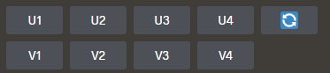
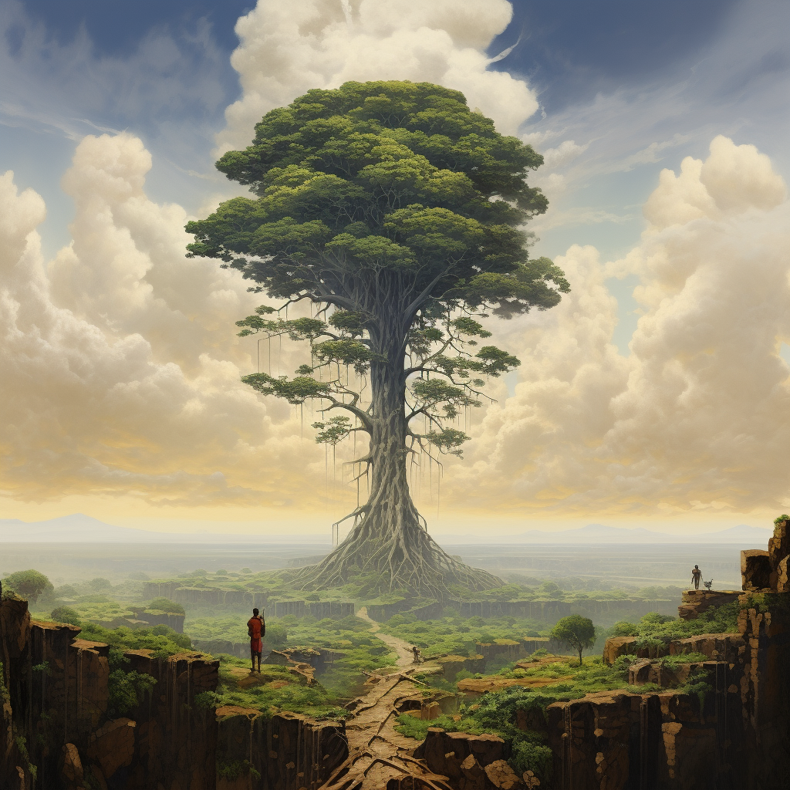
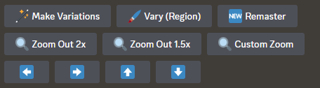
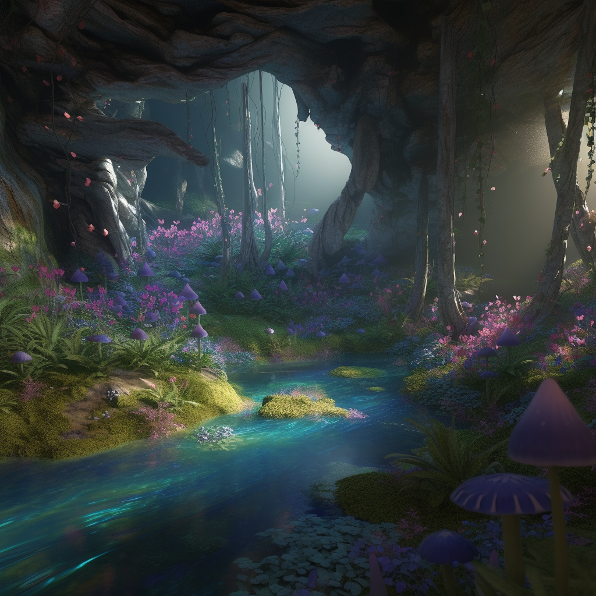
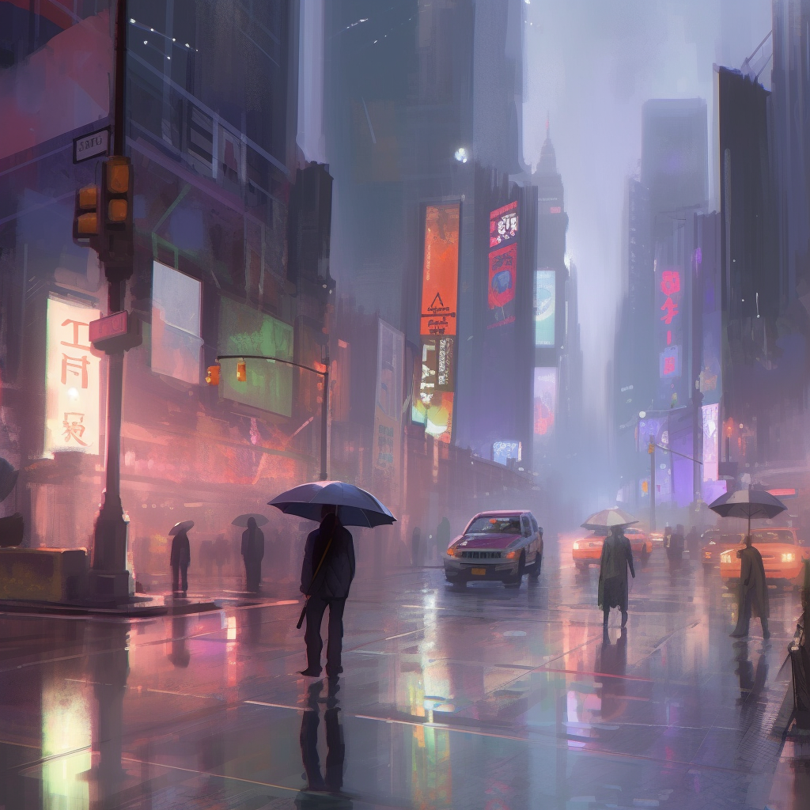
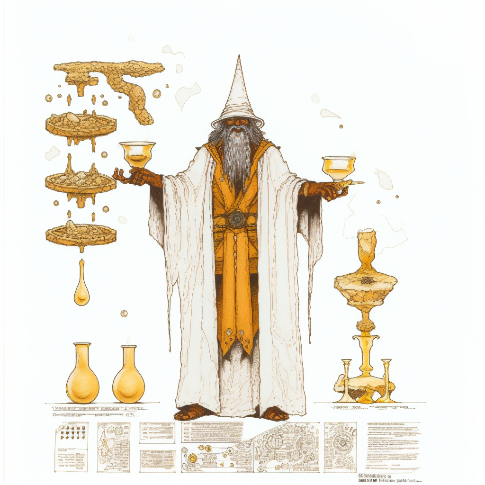
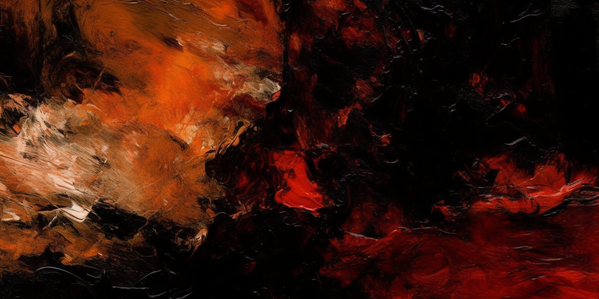

This Midjourney Demo is a high level overview of what exactly midjourney is and how to use it effectively
Midjourney is a tool that is used to create images using AI and machine learning. It is provided by an independent company that uses Discord to deliver its product to the people. While Midjourney has a free version, we will be using the paid-for version as it’s generally quite a bit easier to use.Midjourney is constantly innovating, so depending on the time this article was released, this data may be outdated. However, it will likely still be relevant to some extent.
How to use:
Whenever you pay for midjourney, you will receive a message in your discord private messages from a ‘Midjourney Bot’. This private message channel will be where we interact. If you are using the free version of Midjourney, you will have to use the Midjourney discord channel but the usage is similar.To start off simple, let's create a simple image of a tree. To do this will be using the command /imagine prompt: It can be a bit tricky, but it'll open a prompt that you're going to want to type your description and information into. If you type your input outside of this prompt the command will be formatted strangely and it won’t work as intended. It should look something like this:
Once we are in here we will type a description of ‘A tall tree’. This is the output from the bot:

The output of the midjourney bot will always be a tileset of four images. At the bottom of each image output there are a few options you can take:

The options can be broken down into three types:
- U (Upscale)
- V (Variant)
- Reload
- 1: Top Left
- 2: Top Right
- 3: Bottom Left
- 4: Bottom Right

And if you click on ‘U3’ it’ll upscale the bottom left image in the tile and give us:
 Whenever we upscale an image, we have a few additional options that are presented to us.

Let’s break them down:
- Vary (Strong/Subtle): Similar to the V option we saw earlier, this option makes variations to the upscaled image, and produces a new tileset to choose from based on the upscaled image.
- Vary (Region): This is a very useful and powerful option that allows you to make variations to a certain section of the image. It has a box and lasso selector so you can get really specific with a section of an image you want to change.
- Zoom (2x, 1.5x, Custom): Allows you to zoom out of the current image. 2x and 1.5x are pretty self explanatory but custom zoom is bounded to the range of 1.0 and 2.0. So there is currently no way to zoom into the image, or zoom out more than 2x.
- Arrows: The arrows allow the image to pan. It will alter the aspect ratio of the image as well. So clicking the ‘pan left’ arrow, will extend the image to the left. The output of this option is another tileset that you can choose the ‘U’, ‘V’, and ‘Reload’ options.
And exploring ‘Reload’ will give us a new tile set.So now that all the current options are explored, we can delve into how to create prompts, and the options that can be applied.
So before we used the prompt ‘A tall tree’ to give us that output. We can be much more granular without prompts though. Here are a few tilesets generated with slightly different, increasingly granular prompts.

A tall tree with red leaves.

A tall tree with red leaves overlooking a mountain range with snowy peaks

A tall tree with red leaves overlooking a mountain range with snowy peaks. A man sits underneath the tree.

A tall tree with red leaves overlooking a mountain range with snowy peaks. A war-torn man sits underneath the tree wielding an ax on his back.
As you can see, you can be pretty verbose with your descriptions. However, you can definitely get too verbose. As you add granularity to your prompt, it leaves more room for interpretation from the bot. There are some things you can do to ‘fix’ this, however, we will ignore this for now as it isn’t incredibly important. A good rule of thumb to keep in mind is generally the more concise your prompt is, the better.
There are some options and keywords that are really important to know though, so let’s explore those.
–v or –version : This is the version of midjourney to use. While not required, putting this setting at the end of your prompt is highly recommended, as it’ll often lead to a better output. At the time of writing this article, the highest version is 5.2
–ar or –aspect: This is the aspect ratio, by default it is set to 1:1, however, you can use any aspect ratio. 9:16 is common for making anything designed for vertical viewing.
–chaos: This is a setting that adjusts variety in results. The higher the value, the more variety between the images in the tileset. This value is bound from range (0 - 100).
–q or –quality: This setting adjusts how many GPU minutes the bot will spend on creating an image. The higher the value, the higher the quality, at the expense of time. This value is bound from range (0.25, 0.5, or 1)
–s or –stylize: This setting adjusts how much the default midjourney aesthetic is applied to the image. The higher the value is, the more midjourney will stylize the output to its default aesthetic. It is bound from range (0 - 1000)
–tile: This setting will generate images that will tile seamlessly together.
–weird or –w: This setting will apply an unusual, likely experimental aesthetic to the image. The higher the value, the ‘weirder’ the image. It is range bound from (0 - 3000)
Keywords: There is no set limit of keywords. Keywords can be anything ranging from camera details(focus, shutter speed, focal points, lens types, etc.), specific artists' styles (Picasso, Ralph Steadman, Bill Watterson), attributes (shiny, fuzzy, furry, soft, skin-like, metallic), eras (1970s style, 12th century, etc.), art styles(cartoon, pixar animation, rick and morty style, etc.), and qualities(4k, 8k, hddr, hyper realistc, etc). This is not even close to the amount of types of keywords you can use, this is just a quick overview. Largely, if it could be applied as an adjective, you can use it as a keyword.
Based on what we now know about keywords and options, lets generate some images.
Deep in the fairy woods, a land fills with soothing purples, greens, and blues, mystical, hyper realistic, 8k, hddr, --v 5.0 --w 500

New York city if it was a dystopian future, smog, dirty, grime, neon, bright colors, urban decay, intricate anime style --v 5.0 --chaos 20

An old mage named Ted that has a large belly and uses 'beer magic'. Beer flows around him as he uses it as his source of magic. White background with Bill Watterson character design. --v 5.0 --chaos 20 --q 0.5

Abstract oil painted art based on the Dual of Mustafar, deep reds, feelings and themes of anger, sorrow, hatred, and betrayal. Hand painted --v 5.0 --chaos 25 --q 0.5 --ar 2:1
Here you can see how powerful this tool is at creating a variety of images that can be used for any setting.
If you wish to do further research on the documentation of midjoruney, please visit: https://docs.midjourney.com